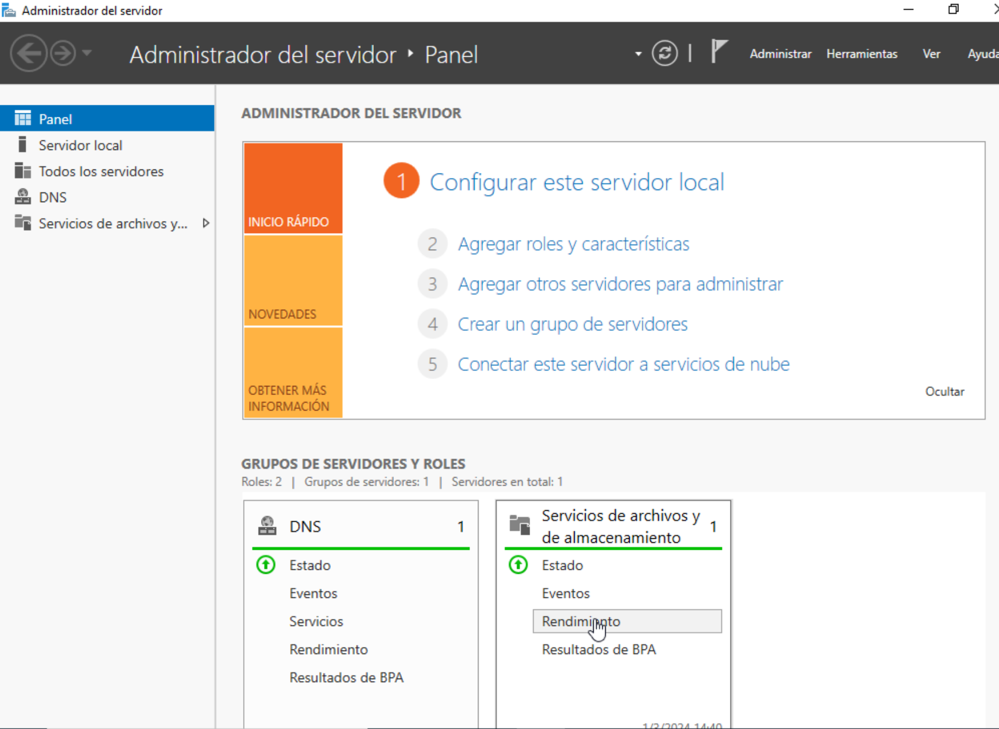

Guía de Instalación de IIS en Windows Server
Bienvenido a nuestra guía detallada sobre cómo instalar Internet Information Services (IIS) en Windows Server. Si estás buscando configurar un servidor web robusto, seguro y de alto rendimiento en un entorno Windows, IIS ofrece una plataforma de administración web integral y escalable adecuada para sitios web de todos los tamaños. Desde servir páginas web estáticas hasta aplicaciones web dinámicas, IIS proporciona las herramientas y características necesarias para satisfacer las necesidades de tu proyecto o empresa.
Esta guía está diseñada para administradores de sistemas, desarrolladores web, y profesionales de TI que buscan implementar IIS en su infraestructura de Windows Server. Asumimos que tienes una comprensión básica de los principios de redes y administración de servidores Windows, pero no te preocupes si eres nuevo en esto; el proceso de instalación y configuración de IIS es accesible para usuarios de todos los niveles.
¿Por Qué Elegir IIS?
IIS no es solo un servidor web. Es una plataforma web extensible que soporta aplicaciones .NET, PHP, y otras tecnologías populares de desarrollo web. Además, ofrece características avanzadas de seguridad, administración remota, compresión de contenido, caché, y mucho más. Con IIS, puedes:
Alojar uno o varios sitios web y configurarlos según tus necesidades específicas.
Aprovechar la integración profunda con otras tecnologías de Microsoft para una administración y mantenimiento más eficientes.
Utilizar una variedad de módulos para extender las capacidades del servidor según los requerimientos de tus aplicaciones web.
Antes de Comenzar
Antes de sumergirnos en la instalación de IIS, es crucial preparar tu entorno y asegurarte de que todo esté listo para una instalación exitosa. Aunque ya tienes los pasos específicos para la instalación, aquí hay algunos puntos importantes a considerar:
Revisar Requisitos del Sistema:
Asegúrate de que tu servidor cumpla con los requisitos mínimos de hardware y sistema operativo para IIS y cualquier software adicional que planees usar.
Planificar la Estructura del Sitio:
Considera cómo organizarás tus sitios web, aplicaciones, y contenido dentro del servidor. Una buena planificación facilitará la administración y escalabilidad futuras.
Configuraciones de Red:
Verifica la configuración de red de tu servidor, incluyendo direcciones IP, nombres de dominio, y puertos. Esto es esencial para asegurar que tu servidor web sea accesible para los usuarios finales.
Seguridad:
Familiarízate con las prácticas recomendadas de seguridad para IIS y Windows Server. Esto incluye la configuración de certificados SSL para sitios web seguros, la restricción de permisos de acceso, y la implementación de firewalls y otras medidas de protección.
Instalación de IIS en Windows Server
Para instalar Internet Information Services (IIS) en Windows Server, sigue estos pasos detalladamente:
- Pulsa la tecla de Windows y selecciona el Administrador del servidor. 
- En el panel del Administrador del servidor haz clic en Administrar > Agregar roles y características.
- Haz clic en Tipo de instalación (Installation Type).
- Selecciona la opción Instalación basada en funciones o características (Role-based or feature-based installation) y haz clic en Siguiente (Next).
- Selecciona el servidor en el que deseas instalar IIS y haz clic en Siguiente (Next).
- Para el rol, selecciona Servidor web (IIS).
- Para agregar la Consola de administración de IIS, haz clic en Agregar características (Add Features).
- Haz clic en Siguiente (Next). Se abrirá la ventana Seleccionar características (Select features).
-
Haz clic en Siguiente (Next). Se abrirá la ventana Rol de servidor
web (IIS) (Web Server Role (IIS)).

- Haz clic en Siguiente (Next). Se abrirá la ventana Servicios de rol (Role services).
- Selecciona los servicios de rol requeridos y haz clic en Siguiente (Next).
- Para instalar los roles, servicios de rol y características seleccionados, haz clic en Instalar (Install).
- Para completar la instalación haz clic en Cerrar.